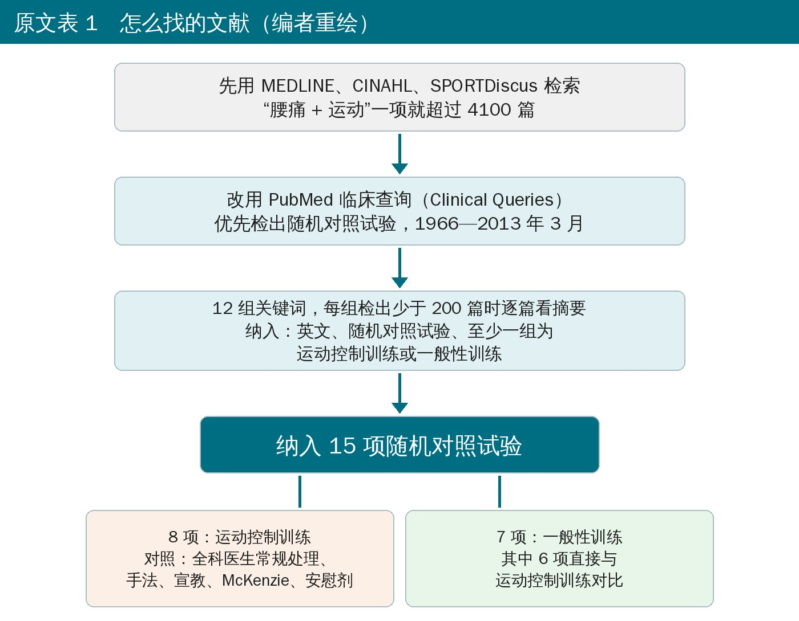
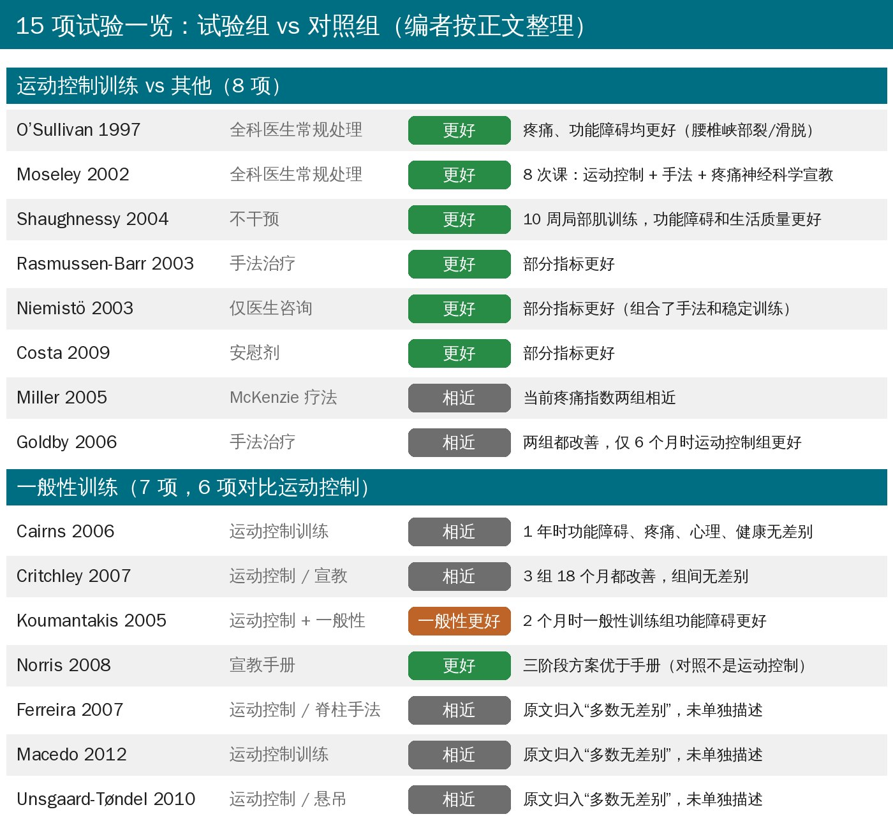
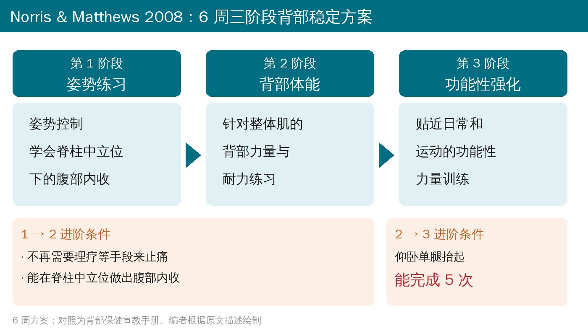

🔖原文信息（编者中文重排）
📚 文献信息
▪ Brumitt J, Matheson JW, Meira EP. Core Stabilization Exercise Prescription, Part 2: A Systematic Review of Motor Control and General (Global) Exercise Rehabilitation Approaches for Patients With Low Back Pain. Sports Health. 2013;5(6):510-513.
▪ 作者来自美国太平洋大学（俄勒冈）物理治疗学院等
▪ 系统综述（PubMed 临床查询，1966—2013 年 3 月）；DOI：10.1177/1941738113502634
▪ 上篇讲两条路线怎么评估、怎么练，本篇回答“哪条更有效”
上篇介绍了两条核心稳定路线：运动控制训练（专门练腹横肌、多裂肌，先学腹部回缩）和一般性训练（整体肌一起练，比如 McGill 三大动作、背部力量训练）。
这篇把 15 项随机对照试验放在一起看，结论很直接：两条路线都能减轻慢性腰痛的疼痛和功能障碍；但直接对比时，大多数研究两组没差别，有 2 项反而是一般性训练更好。作者的原话是：“可能没有必要专门开那些号称能选择性激活局部肌的练习。”

🔖检索流程（按原文表 1 重绘）
• 先在三个数据库里检索，结果太多（“腰痛 + 运动”超过 4100 篇），改用 PubMed 临床查询，专门筛随机对照试验
• 12 组关键词，每组检出少于 200 篇时逐篇看摘要；只纳入英文随机对照试验，至少一组用运动控制训练或一般性训练
• 最终纳入 15 项：8 项运动控制训练与其他处理比较，7 项一般性训练（其中 6 项直接与运动控制训练比较）

🔖15 项试验一览（编者按正文整理；原文附录 1、2 的逐项表格未能获取）
• 和全科医生常规处理比，2 项研究运动控制组更好：O’Sullivan 1997（腰椎峡部裂/滑脱）、Moseley 2002
• Moseley 的方案只有 8 次课：运动控制训练 + 手法 + 疼痛神经科学宣教
• Shaughnessy 2004：10 周局部肌训练，功能障碍问卷和生活质量（除总体健康外）都明显优于不干预组
• 对比手法、宣教、安慰剂时，运动控制训练在部分指标上更好
• 对比 McKenzie 疗法（腰痛超过 7 周）：当前疼痛指数两组相近；6 周后运动控制组疼痛描述和当前疼痛指数都改善，McKenzie 组只改善了后者
• 对比手法治疗（Goldby 2006）：两组 3、6、12 个月都改善，只有 6 个月时运动控制组更好
• Cairns 2006：专门练局部肌 vs 不含低负荷高重复练习的常规积极治疗，1 年时功能障碍、疼痛、心理困扰、总体健康都没差别
• Critchley 2007：三组（含专门的躯干肌再训练、宣教）18 个月都比基线改善，组间没差别
• Koumantakis 2005：运动控制 + 一般性训练 vs 单纯一般性训练，2 个月时单纯一般性训练组的功能障碍反而更好，两组疼痛都明显下降；这项研究写清了每周的练习内容，并且按躯干肌的估算总输出力来平衡两组练习时间
综述里写得最具体的方案来自 Norris & Matthews 2008：慢性腰痛患者做 6 周三阶段背部稳定训练，疼痛（简式 McGill 疼痛问卷）、功能障碍（Roland-Morris 问卷）和恐动（坦帕恐动量表）都优于只发背部保健手册。

🔖Norris & Matthews 三阶段方案与进阶条件
• 第 1 阶段 姿势练习 → 进阶条件：不再需要理疗止痛，且能在脊柱中立位做出腹部内收
• 第 2 阶段 背部体能练习（针对整体肌） → 进阶条件：仰卧单腿抬起能完成 5 次
• 第 3 阶段 功能性强化
• 有意思的是：它的入门用的是传统上用来“单独激活局部肌”的腹部内收，但后面的练习都是练整体肌的——两派的东西其实可以拼在一起用
🔖原文临床推荐（SORT 分级）
• 严格说算不上规范的系统综述：只检索了 PubMed 临床查询，只收英文，没有做偏倚风险或质量评价，没有合并数据，也没说明几个人筛选
• 纳入研究的人群、方案、对照、随访时间差别很大（有的是腰椎滑脱，有的是复发性腰痛），放在一起只能定性看
• 大多是慢性或亚急性腰痛的普通患者，专门针对运动员的随机对照试验几乎没有
• 逐项研究的数据在附录里，正文只挑了几项描述；所以上面的一览图有 3 项只能写“原文归入多数无差别”
原文里对不上的地方：
• 正文说“2 项研究结果支持一般性训练（参考文献 11、17）”，但 17 是 Niemistö（手法 + 稳定训练 vs 医生咨询，属运动控制类），紧接着描述的却是 Koumantakis（11）和 Norris & Matthews（18），引用应为 11、18
• 而 Norris & Matthews 的对照是宣教手册，不是运动控制训练，不能算作“一般性训练优于运动控制训练”
• 原文表 1“纳入评价”一列加起来是 14 篇（8 + 3 + 1 + 1 + 1），与正文“15 篇”对不上
• 摘要写数据来源是 PubMed 临床查询，方法里却先写了 MEDLINE、CINAHL、SPORTDiscus（后放弃），摘要没交代
• 参考文献 21 作者写成“Richardson C, Hodges PW, Hides J, Richardson C”，和上篇一样重复
• 别纠结“到底练深层还是练整体”：两条路线都有效，直接对比大多没差别，选患者能做、愿意坚持的
• 腹部回缩可以作为入门技巧，但不必花几周只练“单独激活腹横肌”才敢往下走
• 推荐参考 Norris & Matthews 的思路：先止痛 + 学会中立位收腹 → 整体肌力量耐力 → 功能性训练，用“仰卧单腿抬起 5 次”这类简单标准来决定进阶
• 宣教不能少：Moseley 的方案里加了疼痛神经科学宣教
• 证据等级只有 B，个体反应差别大，按评估结果（见上篇的测试）调整比死守一种流派更重要
原文表 1 关键词检索结果
| 关键词 | 检出 | 可能相关 | 纳入评价 |
|---|---|---|---|
| 运动控制训练 | 1729 | — | — |
| 治疗性运动 AND 腰痛 | 837 | — | — |
| 一般性运动 AND 腰痛 | 188 | 17 | 8 |
| 节段稳定 | 139 | 4 | 0 |
| 稳定 AND 运动 | 122 | 7 | 3（2） |
| 整体运动 AND 腰痛 | 70 | 5 | 1（2） |
| 运动控制训练 AND 腰痛 | 33 | 9 | 0（4） |
| 腹横肌 AND 运动 | 27 | 7 | 0 |
| 核心稳定训练 | 37 | 2 | 1 |
| 节段稳定训练 | 11 | 3 | 0 |
| 局部肌训练 AND 腰痛 | 10 | 0 | 1 |
| 核心稳定训练 AND 腰痛 | 6 | 2 | 0（2） |
括号内为与前面检索重复的篇数。“纳入评价”一列合计 14 篇，正文写 15 篇。
欢迎关注骨科康复小黄公众号，获取更多物理治疗的专业知识！
📄参考文献：
Brumitt J, Matheson JW, Meira EP. Core Stabilization Exercise Prescription, Part 2: A Systematic Review of Motor Control and General (Global) Exercise Rehabilitation Approaches for Patients With Low Back Pain. Sports Health. 2013;5(6):510-513. doi:10.1177/1941738113502634
原文版权归作者与 SAGE 出版社所有，非知识共享协议开放获取。本文仅为学术交流用的中文解读，所有图表均为编者根据原文中文重绘或翻译，如有侵权请联系删除。